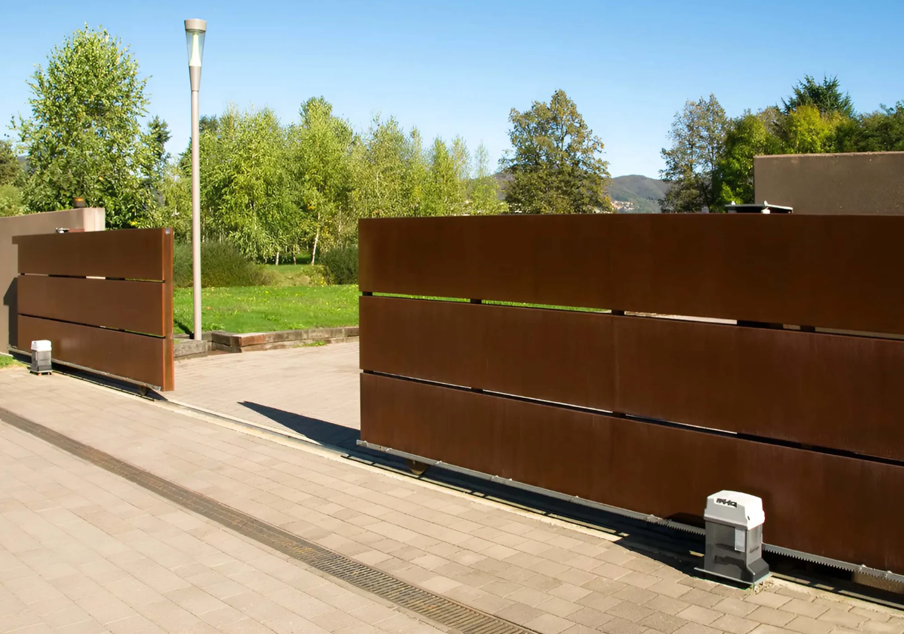

Automatizaciones para puertas corredizas con peso de hasta 1800 Kg
Motoriduttori rinnovati grazie alla scheda elettronica di controllo integrata E781 che dispone di livelli di controllo regolabili di velocità. Include due ingressi dedicati per coste di sicurezza (NC o 8,2 KOhm) e tecnologia Bus2Easy
Nuovo controllo motore retroattivo dotato di encoder ad alta risoluzione, 844 C offrono rampe di accelerazione e decelerazione più fluide, ottimizzazione della forza, riduzione dei consumi energetici e sensibilità regolabile al rilevamento degli ostacoli.
Compatibile con Simply Connect e con la nuova tecnologia radio FDS


Movimentazione silenziosa. La tecnologia a bagno d’olio offre un’esperienza di movimentazione superiore.
Utilizzo intensivo. La presenza dell’olio assicura un’efficiente dissipazione di calore e migliora la frequenza di utilizzo.
Vita prolungata. L’azione lubrificante dell’olio riduce l’attrito tra i componenti, per un’automazione affidabile che rrichiede poca manutenzione, con lunga durata e prestazioni elevate nel tempo.

E781 integra una vasta gamma di tecnologie e innovazioni per massimizzare la compatibilità dei motoriduttori con l’universo FAAC.
Programmazione tramite display e pulsanti, numerosi parametri configurabili, due ingressi indipendenti per coste di sicurezza e due uscite programmabili.
Info tecniche